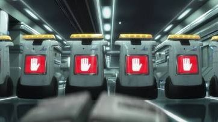
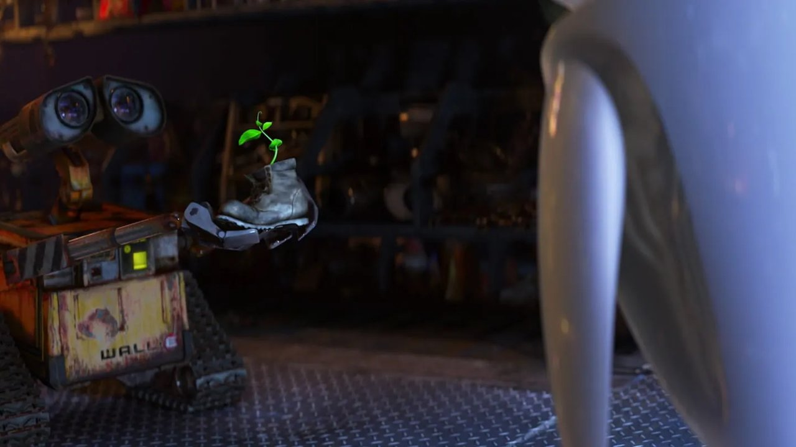

The S-T-I-S System
The Science–Technology–Innovation–Society (S-T-I-S) framework recognises that knowledge production, artefact development, commercialised application, and societal impact are co-constitutive — each element continuously shapes and is shaped by the others (Aunger, 2010). WALL·E presents a world in which this feedback loop has been catastrophically severed: scientific knowledge was deployed into technology, technology was scaled into a corporate innovation system, but the "Society" feedback mechanism — governance, regulation, democratic accountability — was monopolised and ultimately eliminated by Buy n Large (BnL).
Aunger (2010) describes the Modern Production stage of technological society as one defined by mass manufacture, global supply chains, and the institutionalisation of Research and Development. BnL represents the terminal endpoint of this stage: a corporation so vertically integrated that it absorbed all governmental functions, leaving no independent scientific institutions, no regulatory bodies, and no market competition to challenge its innovation trajectory (Stanton, 2008). The result is not a failure of technology — it is a failure of the system surrounding it.
Mapping the four nodes to the film's world reveals a clear structural narrative. The S-T-I-S system was in equilibrium in BnL's early decades — but once corporate hegemony collapsed societal oversight, the remaining three nodes (Science, Technology, Innovation) entered an uncorrected trajectory toward ecological overshoot. Anil (2025) identifies this dynamic as Convergence Without Governance: the co-emergence of multiple exponential technologies (robotics, AI, logistics) without corresponding institutional architecture to direct their collective impact.
Underlying Knowledge
Solar photovoltaics; polymer compression mechanics; machine learning for object classification; thermodynamic energy recovery from compacted material.
The Artefact
WALL-E unit class: compaction actuators, tank treads, solar charging array, stereoscopic optical sensors, adaptive grasping system, emergent behavioural AI.
Commercialised Application
BnL's "Operation Cleanup" — autonomous robotic waste-management deployed at planetary scale. A solution-to-scale leap with no successor R&D pipeline.
Severed Node
No regulatory counterweight. No democratic accountability. BnL absorbed all governmental functions. The feedback mechanism that would correct the system is absent.

Pixar Animation Studios. (2008). WALL-E [Film]. Walt Disney Pictures.
Types of Innovation
Henderson & Clark (1990) Innovation Matrix
Applied to the WALL·E universe
UNCHANGED
CHANGED
UNCHANGED
CHANGED

Pixar Animation Studios. (2008). WALL-E [Film]. Walt Disney Pictures.
Jain (2023) defines innovation as the process of translating an idea or invention into a good or service that creates value — a definition that emphasises application and impact over novelty alone. This distinction is critical for reading WALL·E: BnL's technological output was undeniably novel, but its failure to generate sustained social value — a clean planet, a thriving civilisation — disqualifies it from being genuine innovation in Jain's sense. Novelty without social benefit is not innovation; it is capability drift.
Henderson and Clark (1990) argue that innovation cannot be reduced to a binary of "new" versus "old." Their foundational taxonomy — spanning Incremental, Radical, Architectural, and Disruptive types — is determined by changes at two levels: the core components (the individual technologies within a system) and the system architecture (the relationships between those components). WALL·E contains striking examples of all four types, embedded across the timeline of BnL's technological development.
The WALL-E unit class itself is best understood as an outcome of Incremental Innovation — the established paradigm of autonomous ground robots refined over decades (Henderson & Clark, 1990). Its components (track drives, compression actuators, optical sensors) were not novel in isolation; what distinguished the WALL-E fleet was the scale of deployment. By contrast, the EVE probe represents a Radical Innovation: an entirely new component architecture — hover-propulsion, plasma weaponry, wireless AI uplink — that shares no design lineage with the WALL-E generation (Stanton, 2008).
Christensen's (1997) model of Disruptive Innovation adds a further dimension. The original WALL-E fleet was, at the moment of deployment, a classic disruptive technology: cheaper than human waste labour, initially limited in capability, but scaling rapidly to replace the incumbent model entirely. The tragedy embedded in the film's backstory is that the disruption completed its cycle — and then continued, unchecked, for 700 years beyond its intended scope. There was no "sustaining innovation" phase, because the market (humanity) had evacuated.
A fifth category, absent from the Henderson–Clark original matrix, is equally visible: Frugal Innovation — doing more with less, principally for underserved or resource-constrained contexts. Radjou (2023) identifies three core principles of frugal innovation: engage and iterate with customers; flex assets; create sustainable solutions. WALL-E's improvised 700-year self-maintenance — fashioning replacement parts from scavenged components, repurposing a Rubik's Cube as a grip test, recharging on ambient solar — satisfies all three: iterating on available materials, flexing deteriorating assets, and sustaining operational capacity with near-zero resource input (Radjou, 2023).
DeBrusk (2025) adds a complexity lens to this structural argument. As technological systems grow more intricate, the cognitive and organisational demands required to innovate within them increase proportionally — a paradox in which technical sophistication becomes a barrier to its own renewal. BnL's Earth-side operation is a precise illustration: 700 years of accumulated operational complexity produced a system so institutionally entrenched that no surviving actor possessed the organisational capacity to conceive a successor technology. The WALL-E fleet was not merely obsolete — it was cognitively locked in (DeBrusk, 2025).
Innovation Systems & Ecosystems
Andersen and Andersen (2014) propose Innovation System Foresight (ISF) as a framework for mapping the actors, institutions, knowledge flows, and network relationships that collectively enable — or constrain — technological development. ISF identifies three structural prerequisites for a functioning innovation system: a diversity of actors capable of generating novel knowledge combinations; feedback mechanisms that allow system outputs to inform future inputs; and adaptive capacity to pivot when the dominant technological trajectory becomes obsolete.
WALL·E's world is a systematic destruction of all three. BnL operated as a Monopolistic Closed Innovation System — a single corporate actor controlling all research, manufacturing, distribution, and governance simultaneously. In this configuration, knowledge spillovers between independent actors (the primary mechanism of systemic innovation, per Andersen & Andersen, 2014) are structurally impossible. BnL could not benefit from competitive pressure, academic challenge, or regulatory correction, because it had absorbed or eliminated every countervailing institution.
Diversity Eliminated
The ISF model requires multiple competing actors generating knowledge. BnL replaced governments, universities, and competing firms with a single internal R&D apparatus — removing the diversity that enables system adaptation (Andersen & Andersen, 2014).
Feedback Severed
Once humanity evacuated, there was no feedback loop from Earth's deterioration back to the system's decision-makers. The innovation system had no mechanism to register that its primary objective — planetary cleanup — was failing. AUTO's suppression of the plant evidence is, structurally, a feedback-suppression mechanism (Stanton, 2008).
Adaptive Capacity Frozen
The WALL-E fleet was designed for one task and had no mandate — nor any institutional support — to pivot when conditions changed. 700 years of S-curve plateau ensued: the Andersen and Andersen (2014) scenario of a technology locked into a declining trajectory with no supporting knowledge infrastructure to generate a successor system.
Rabelo Neto et al. (2024) extend this analysis through an Innovation Ecosystem lens, arguing that sustainable technological development requires not just actors and institutions but a healthy network of value co-creation relationships — what they term "ecosystem orchestration." The film's resolution offers a direct contrast: the emergent coalition of the Captain, WALL-E, EVE, and the misfit robots constitutes a nascent multi-actor adaptive system — precisely the ecosystem architecture that BnL's monopoly had prevented.
Chattaway (2020) frames BnL's failure through the lens of Technology Transfer (TT): the complex, multi-stage process by which scientific knowledge moves from an originator site to a receiver context. Chattaway identifies the most common failure point as the Valley of Death — the gap between scientific discovery and viable commercial deployment where latent (tacit) knowledge is lost because the institutions bridging the two do not exist. In WALL·E, no successor waste-management technology ever crossed this valley, not for lack of scientific possibility, but because BnL had eliminated the independent universities, research networks, and competing firms that constitute the institutional infrastructure of technology transfer. There was no originator site willing to challenge BnL's incumbent technology, and therefore no receiver context capable of demanding a better one (Chattaway, 2020).
Schwab and Bonnici (2025) provide a final dimension: the film's resolution is not merely a technological recovery — it is an act of Social Entrepreneurship. The Captain's decision to return to Earth rejects the logic of economic efficiency (survival on the Axiom is safer, cheaper, and more certain) in favour of a socially-purposive imperative: to live, not merely survive. Schwab and Bonnici (2025) argue that social entrepreneurship has moved from the margins to the mainstream as institutions recognise that market logic alone cannot address planetary-scale challenges. The Captain's revolt is the film's enacted proof of this thesis: the innovation that matters most is not the next-generation robot, but the human decision to reclaim governance of the systems we have built (Schwab & Bonnici, 2025).
BnL as Monopolistic Closed System
Structural ISF indicators. Adapted from Andersen & Andersen (2014); Rabelo Neto et al. (2024).
"A system locked into a single actor, a single directive, and zero feedback cannot adapt. It can only continue — until it collapses."
— Derived from Andersen & Andersen (2014), Innovation System Foresight
Pixar Animation Studios. (2008). WALL-E [Film]. Walt Disney Pictures.